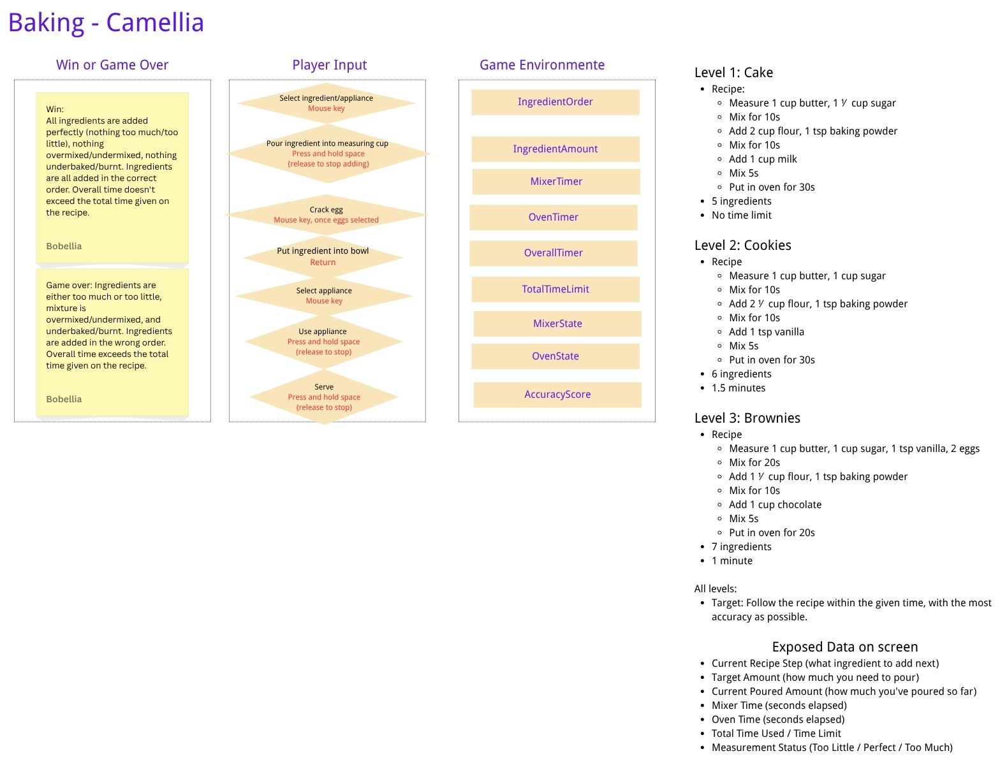

A baking game about balancing accuracy and timing
Knead for Speed is a desktop-browser baking game where you manage a bakery by following recipes under time pressure. You must measure ingredients precisely, mix and bake for exactly the right duration, and serve customers before they lose patience.
As you play, you'll discover that doing everything perfectly but too slowly earns you nothing — and rushing through measurements ruins the pastry. The best bakers multitask and find the sweet spot between precision and speed.
Play NowPrecise amounts of flour, sugar, butter, and more
Whisk ingredients together for the right duration
Perfect timing in the oven makes all the difference
Present your creation before time runs out!
Managing a bakery or pastry cafe involves more than just following a recipe. In a real cafe, bakers work against the clock: customers expect their orders quickly, but a rushed pastry with inaccurate measurements or underbaked center will be sent back.
Beginners believe that referring to the recipe for every pastry and focusing entirely on getting each measurement exactly right is the path to success. They do one thing at a time, wait for each step to finish before starting the next, and ignore the overall clock.
Experienced bakers know that cafe success requires balancing accuracy with timing. They can measure quickly with practiced precision, start prepping the next ingredient while the mixer runs, and keep one eye on the oven timer while doing other tasks. They know when "close enough" is good enough and when perfection matters.
The tension between "measure perfectly" and "hurry up" is an inherently game-like conflict. By giving the player direct control over both dimensions — with clear feedback on each — the game turns a real professional skill into an engaging challenge loop.

The system graph shows the relationships between player input, game environment variables, and win/loss conditions across three challenge presets (Cake, Cookies, Brownies).
All ingredients added perfectly, nothing overmixed/undermixed, nothing underbaked/burnt, correct order, and total time within limit.
Any ingredient measured poorly (Bad), mixture under/overmixed, pastry underbaked/burnt, wrong order, or exceeding the total time limit.
No time limit
5 ingredients. Focus on learning the measuring and timing mechanics without pressure. Recipe: butter, sugar, flour, baking powder, milk.
1.5 minute limit
5 ingredients. Introduces time pressure. Recipe adds vanilla. Player must start working faster while maintaining accuracy.
1 minute limit
7 ingredients. Tightest timing. Recipe includes eggs and chocolate. Demands efficient multitasking and precise execution.